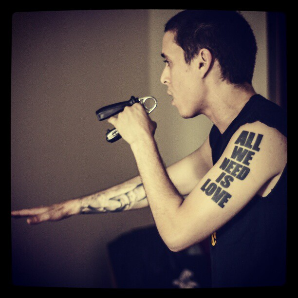

Biografia
Tyrone José González Orama (Caracas, 11 de marzo de 1988-Maracay, 20 de enero de 2015), mejor conocido por su nombre artístico Canserbero,56 fue un rapero, poeta, compositor y activista social venezolano. Considerado uno de los mejores raperos de la historia, tan solo al lado de The Notorious B.I.G. y 2pac. Fue uno de los intérpretes más significativos del rap independiente en su país de origen y en América Latina.
Fotos

